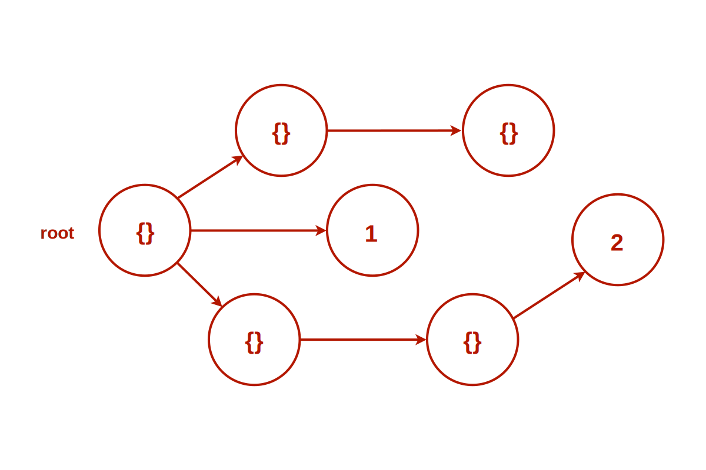
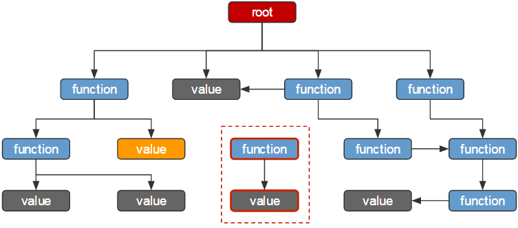

Обзор возможностей Chrome Developer Tools
Игорь Уваров, CSSSR
Chrome DevTools
Обзор возможностей
Разберем
- Работу с версткой и стилями
- Работу с сетью
- Отладку JavaScript
- Измерение производительности
Что есть интересного
- Управление классами
- Доступ к DOM из консоли
- Управление анимациями
Возможности работы с сетью:
- Фильтрация запросов
- Ограничение скорости
- Сбор логов
Использование вкладки Source:
- Несколько способов останавливать выполнение кода
- Просмотр стека вызовов
- Возможность следить за выбранными переменными
- Доступ к контексту из консоли
Что такое производительность?
Производительность – это искусство избегать работы и делать любую работу как можно более эффективно. Во многих случаях это означает работу вместе с браузером, а не против него.
Как рендерится 1 кадр?

Признаки проблем с памятью:
- Приложение постепенно начинает работать медленнее.
- Приложение постоянно медленно работает.
- Приложение иногда подвисает или подтормаживает.
Как устроена память JS?

Как работает сборщик мусора?
